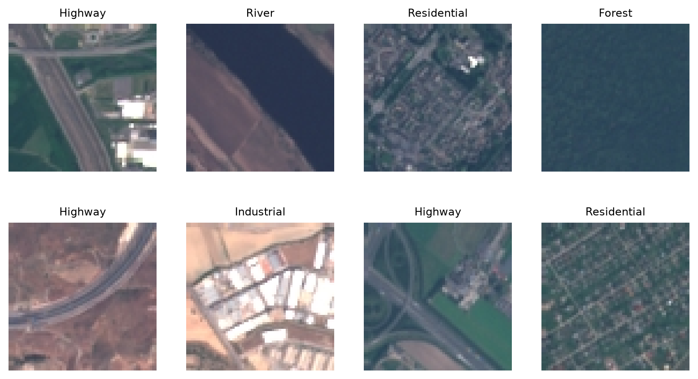

from pathlib import Path
import torch
from matplotlib import pyplot as plt # to look at a batch
from torch.utils.data import DataLoader, Subset
from torchvision.datasets import EuroSAT
from torchvision.transforms import v2 as TDataLoaders
Datasets hand out one sample at a time, but models consume batches of tensors. The DataLoader bridges the two: it shuffles the data, groups it into batches, and loads those batches in parallel worker processes.
In this section, we look at serial data loading.
Packages
torch.utils.dataprovides the DataLoader machinery.torchvision.transforms(its modernv2API, imported asTby convention) lets us turn images into tensors.
Dataset with transform
We need to reload the EuroSAT data and turn our PIL images into tensors because this is what the whole PyTorch machinery (DataLoaders, training, etc.) expects. For this, we create a transform with torchvision transforms v2:
to_tensor = T.Compose([T.ToImage(), T.ToDtype(torch.float32, scale=True)])T.ToImage()turns the PIL image into a uint8 tensor of shape(channels, height, width).T.ToDtype(torch.float32, scale=True)converts it to float32 and rescales the values from the 0-255 range into[0, 1].T.Composechains the two. This minimal pair is all we need to obtain batches; the full preprocessing pipeline (with normalization and augmentation) is the topic of a later section of the course.
We store that transform as an attribute of the dataset:
root = Path("/project/def-sponsor00/data")eurosat = EuroSAT(root=root, transform=to_tensor)
eurosat.transformCompose(
ToImage()
ToDtype(scale=True)
)Transforms are applied on-the-fly inside the dataset’s __getitem__() method when an item is indexed or fetched by a DataLoader.
Then we need to restore the split saved in the previous section, so that every section of the course evaluates on the same validation set:
idx = torch.load(root / "split.pt", weights_only=True)
train = Subset(eurosat, idx["train"])
val = Subset(eurosat, idx["val"])
print(f"{len(train)} training examples and {len(val)} validation examples")21600 training examples and 5400 validation examplesFrom samples to batches
A dataset or a Subset can be indexed to return one sample at a time (here an image tensor and its label):
img, label = train[0]
print(f"First image:\n{img}\nFirst label:\n{label}")
print(f"Shape of the image tensor: {img.shape}")
print(f"{img.min().item():.2f} {img.max().item():.2f}")First image:
Image([[[0.2353, 0.2353, 0.2392, ..., 0.1882, 0.1843, 0.1843],
[0.2392, 0.2392, 0.2392, ..., 0.1882, 0.1843, 0.1843],
[0.2392, 0.2353, 0.2353, ..., 0.2000, 0.1843, 0.1922],
...,
[0.2902, 0.2902, 0.2902, ..., 0.2510, 0.2510, 0.2471],
[0.2824, 0.2863, 0.2667, ..., 0.2667, 0.2588, 0.2510],
[0.2392, 0.2392, 0.2392, ..., 0.2588, 0.2549, 0.2510]],
[[0.3020, 0.3020, 0.2980, ..., 0.3059, 0.3020, 0.3020],
[0.2980, 0.2980, 0.2980, ..., 0.3059, 0.3020, 0.3020],
[0.2941, 0.2941, 0.2941, ..., 0.3059, 0.2902, 0.2980],
...,
[0.3333, 0.3333, 0.3333, ..., 0.3098, 0.3098, 0.3059],
[0.3373, 0.3412, 0.3176, ..., 0.3255, 0.3176, 0.3098],
[0.2980, 0.2980, 0.2902, ..., 0.3176, 0.3137, 0.3098]],
[[0.4196, 0.4196, 0.4275, ..., 0.4157, 0.4118, 0.4118],
[0.4196, 0.4196, 0.4275, ..., 0.4157, 0.4118, 0.4118],
[0.4078, 0.4157, 0.4235, ..., 0.4118, 0.4039, 0.4118],
...,
[0.4431, 0.4431, 0.4510, ..., 0.4235, 0.4235, 0.4196],
[0.4510, 0.4549, 0.4431, ..., 0.4392, 0.4392, 0.4314],
[0.4118, 0.4118, 0.4157, ..., 0.4314, 0.4353, 0.4314]]], )
First label:
1
Shape of the image tensor: torch.Size([3, 64, 64])
0.17 0.46The image is now a PyTorch image tensor and the pixel values are in [0, 1].
A DataLoader takes care of grouping samples into batches.
loader = DataLoader(train, batch_size=64)The loader calls __getitem__() repeatedly, then stacks the samples of each batch into tensors with its collate function.
images, labels = next(iter(loader))
print(images.shape, images.dtype)
print(labels.shape, labels.dtype)torch.Size([64, 3, 64, 64]) torch.float32
torch.Size([64]) torch.int64One batch is a pair of tensors:
imagesstacks 64 images of 3 colour channels and 64 × 64 pixels as one float32 tensor.labelsholds the 64 class indices as one integer tensor.
A loader over the training set yields 338 batches:
print(len(DataLoader(train, batch_size=64)))33821,600 images in batches of 64 gives 337.5, rounded up to 338: the last batch is incomplete (32 images). drop_last=True drops it instead, giving 337 uniform batches. This is sometimes done for training (uniform batch statistics), never for evaluation (every sample must be counted).
Your turn:
How many batches does
DataLoader(val, batch_size=128)produce? (Predict first, then check.)How many batches does
DataLoader(val, batch_size=128, drop_last=True)produce? (Predict first, then check.)How large is the last batch?
Shuffling
Should you shuffle the data?
As seen in the previous section, EuroSAT files are stored class by class (AnnualCrop first, then Forest, etc.). Without shuffling, a loader feeds batches of a single class:
plain = EuroSAT(root=root, transform=to_tensor)
print(next(iter(DataLoader(plain, batch_size=8)))[1])tensor([0, 0, 0, 0, 0, 0, 0, 0])Our training set does not have this problem: the indices drawn by random_split are already shuffled, so batches are mixed. But without shuffle=True, the iteration follows the same fixed order at every epoch:
a = next(iter(DataLoader(train, batch_size=8)))[1]
b = next(iter(DataLoader(train, batch_size=8)))[1]
print(a)
print(b)tensor([1, 0, 0, 7, 6, 6, 4, 2])
tensor([1, 0, 0, 7, 6, 6, 4, 2])With shuffle=True, a fresh order is drawn at every epoch:
a = next(iter(DataLoader(train, batch_size=8, shuffle=True)))[1]
b = next(iter(DataLoader(train, batch_size=8, shuffle=True)))[1]
print(a)
print(b)tensor([8, 5, 0, 5, 9, 9, 3, 5])
tensor([0, 6, 9, 1, 4, 1, 0, 1])Shuffling can be made reproducible by seeding a generator:
g1 = torch.Generator().manual_seed(42)
g2 = torch.Generator().manual_seed(42)
a = next(iter(DataLoader(train, batch_size=8, shuffle=True, generator=g1)))[1]
b = next(iter(DataLoader(train, batch_size=8, shuffle=True, generator=g2)))[1]
print(torch.equal(a, b))True- Note that a
torch.Generatoris a stateful stream of random numbers. The iteration moves the cursor in that stream:
g = torch.Generator().manual_seed(42)
a = next(iter(DataLoader(train, batch_size=8, shuffle=True, generator=g)))[1]
b = next(iter(DataLoader(train, batch_size=8, shuffle=True, generator=g)))[1]
print(torch.equal(a, b))FalseThe generator also seeds the random draws happening inside worker processes, which will matter once we add random augmentation in a later section.
Shuffle the training data only: validation must be deterministic and its order is irrelevant.
Here are the first 8 images of one shuffled batch:
loader = DataLoader(train, batch_size=64, shuffle=True)
images, labels = next(iter(loader))
fig, axes = plt.subplots(2, 4, figsize=(10.2, 5.5))
for ax, image, lbl in zip(axes.flat, images[:8], labels[:8]):
ax.imshow(image.permute(1, 2, 0)) # CHW -> HWC for matplotlib
ax.set_title(eurosat.classes[lbl], fontsize=9)
ax.axis("off")
Mixed classes within each batch give gradient estimates that are not dominated by one class at a time.
Do not shuffle the validation or test data: it is better to keep them in order to make evaluation runs deterministic.
One way to make data loading and transforming a lot faster is to do so in parallel using multiple CPUs.
So far, we have worked on a single CPU and JupyterHub was thus a suitable option: it is convenient and we can display images directly. Since we are about to use multiple CPUs, then GPUs, it is time to move to a workflow that is much more resource-efficient: batch jobs with the Slurm scheduler.